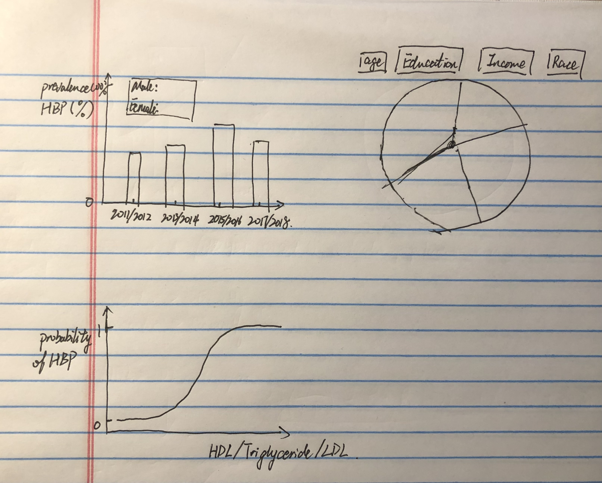

The purpose of this project is to present the prvalence of hypertension in recent years. The data of this project comes from the National Health and Nutrition Examination Surveys (NHANES). Every year, approximately 5,000 individuals of all ages are interviewed in their homes and complete the health examination component of the survey. The data includes demographics data, dietary data, examination data, laboratory data and questionnaire data.
Due to the restriction of most recent data, this project will use Blood Pressure, Demographic, and Cholesterol data sets from 2011 to 2018. The data after modefication and codes (R, Javascript, D3 and Python) for this project are available on GitHub as ChengyunIU Hypertension Project.
Individuals were considered as having hypertension is their systolic blood pressure is higher than 130mm Hg or their diastolic blood pressure is higher than 80mm Hg. Demographic variables such as gender, age, race, education level and income level are selected from the original demographic data set. The age was treated as a categorical variables with 4 categories (20-39, 40-59, 60-79, and 80+).
The first information I would like to discover is the prevalance of hypertension. The bar chart would be used to present the prevalence of hypertension for every two years. So we can see if the trend of prevalence change over time.
For every two years, I would like to use the demographic data to show which group of people are more vulnerable to have hypertension. I decided to use pie charts to show the percentage of hypertension for each categories of the demographic variables.
High-density lipoprotein(HDL), low-density lipoprotein(LDL) and triglyceride are popular biomarkers that related to cardiovascular diseases. This this project, I would like to investigate the relationship between the risk of hypertension and the blood concentration of HDL, LDL and triglyceride. LDL is sometimes called "bad" cholesterol and HDL is called "good" cholesterol. It would be interesting to see how their blood concentrations are related to the risk of hypertension. Therefore the probability curves would be presented for these three biomarkers. 
The prevalence of hypertension slightly increased from 2011 to 2018. In 2017/2018, the prevalence went beyond 40%. When the new data become available on the NHANES websites, we can know if the prevalence is still increasing in recent years. Older age is highly associated with hypertension. The risk of having hypertension increases as the concentration of HDL, LDL and triglyceride increase. Although the HDL is considered as "good cholesterol", it does not show protection effects on hypertension. This finding is probably due to confounding effects of other risk factors of hypertension. Further analysis is required to investigate the potential biomarkers of hypertension.